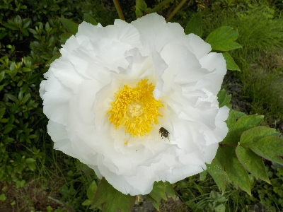
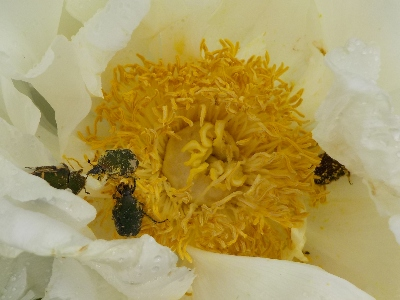
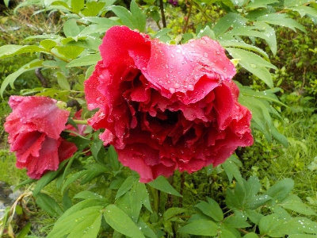
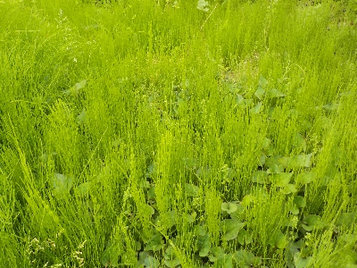
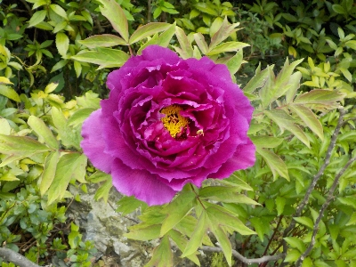
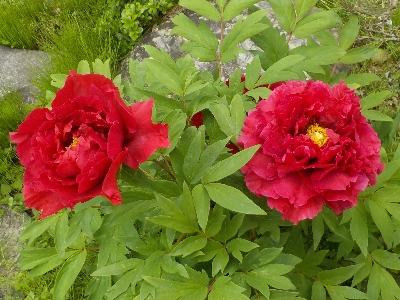
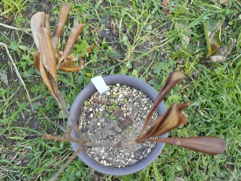

遊びで植物を育てよう
2024/04/27
ボタンを見たら虫に先を越されました。


花数が多いものに虫がいるのは全然いいんですが、花数が少ないものに虫がいるのは嫌かな。
コガネムシも害虫になるので嫌かな。
【4月TOP】
【日記TOP】
【園芸TOP】
2024/04/21
雨に濡れてボタンが下を向いていました。

水分を沢山受けて花がとっても重たそうです。
明日になったら傷みが出るんだろうな。
【4月TOP】
【日記TOP】
【園芸TOP】
2024/04/20
スギナの絨毯はゴールデンウイークに刈ります。

スギナが勢いよく伸びています。草刈りしようと思いましたが、他にやることがあったので先延ばししました。
たぶんゴールデンウィーク中にします。未来の自分に期待します。
【4月TOP】
【日記TOP】
【園芸TOP】
2024/04/20
ボタンがキレイに咲いていました。


今年も家で綺麗なボタンの花が見れて良かった。
公園とか花の施設、人の家とかでもボタンは見ますが、自宅でのんびり1人で見るのが1番好きだな。
【4月TOP】
【日記TOP】
【園芸TOP】
2024/04/13
トベラが枯れました。

トベラは強い植物だと思っていましたが、枯らしてしまいました。
冬に植え替えしたのが悪かったかな。
【4月TOP】
【日記TOP】
【園芸TOP】
過去の日記
【2024年4月の日記】
【2023年4月の日記】
【2022年4月の日記】
【2021年4月の日記】
【2020年4月の日記】
【2019年4月の日記】
【2018年4月の日記】
【2017年4月の日記】
【2016年4月の日記】
【2015年4月の日記】
【2014年4月の日記】
【2013年4月の日記】
【4月TOP】
【日記TOP】
【園芸TOP】
畑仕事じゃないよ。
【おいしいものを食べよう。】【たくさん寝よう。】
【ソロ活をしよう!】【季節感のあることをしよう。】【動画視聴はほどほどに。】【当サイトの全てのコンテンツは無断転載禁止です。】